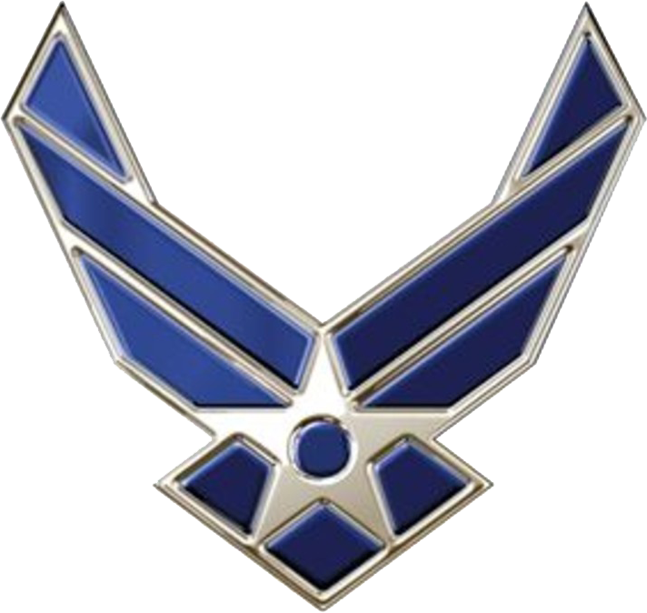

Work Experience
Carson College of Business
May 2019 - Current
Special Projects Coordinator
Currently I work as special projects coordinator primarily focused on the veterans program. Currently working on revamping several
processes to hopefully draw in more military vets to the school as well as making administrative duties more streamlined.
Washington State University
March 2018 - Current
IT Specialist
I also work at the university as an IT specialist. I troubleshoot user issues as well as ensuring that all systems are up to date with
the latest software and maintaining images for department computers.
United States Air Force
April 2011 - April 2017

Korean Cryptologic Language Analyst
While serving in the armed forces, my duties were those of a linguist and intelligence specialist. After completing the Korean course at the Defense
Language Institute, my first duty station was Osan Air Force Base, South Korea. I excelled at my position and within six months was promoted to Conventional
Operations Supervisor, a position generally held by a Senior Non-commissioned Officer. After two years in Korea, I received the Air Force Achievement medal
and departed for Fort George Meade, MD.
While stationed in Maryland, my primary job was as a Target Analyst at the National Security Agency. My duties included working on reports and handling
administrative tasks. I finally separated and returned to Washington state after receiving the Joint Service Achievement medal.
Bishop's Orchard
August 2007 - September 2010
Lead Technician and Fabricator
I worked as the Lead Technician which included operation and maintenance of the
orchard’s heavy equipment. I was also responsible for fabricating anything the owner needed,
including the gates installed at the primary entrance points. Other duties primarily customer service related.